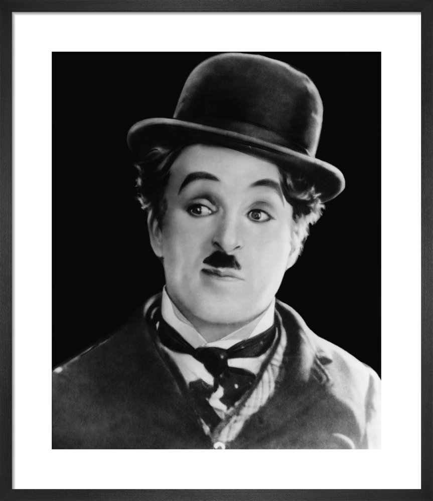

Sir Charles Spencer Chaplin(16 April 1889 – 25 December 1977) was an English comic actor, filmmaker, and composer who rose to fame in the era of silent film. He became a worldwide icon through his screen persona, "The Tramp", and is considered one of the most important figures in the history of the film industry. His career spanned more than 75 years, from childhood in the Victorian era until a year before his death in 1977, and encompassed both adulation and controversy.
Chaplin's childhood in London was one of poverty and hardship, as his father was absent and his mother struggled financially, and he was sent to a workhouse twice before the age of nine. When he was 14, his mother was committed to a mental asylum. Chaplin began performing at an early age, touring music halls and later working as a stage actor and comedian. At 19, he was signed to the prestigious Fred Karno company, which took him to America. He was scouted for the film industry and began appearing in 1914 for Keystone Studios. He soon developed the Tramp persona and formed a large fan base. He directed his own films and continued to hone his craft as he moved to the Essanay, Mutual, and First National corporations. By 1918, he was one of the best-known figures in the world.
After the release of Shoulder Arms, Chaplin requested more money from First National, which was refused. Frustrated with their lack of concern for quality, and worried about rumours of a possible merger between the company and Famous Players-Lasky, Chaplin joined forces with Douglas Fairbanks, Mary Pickford, and D. W. Griffith to form a new distribution company – United Artists, established in January 1919. The arrangement was revolutionary in the film industry, as it enabled the four partners – all creative artists – to personally fund their pictures and have complete control. Chaplin was eager to start with the new company and offered to buy out his contract with First National. They refused and insisted that he complete the final six films owed.
Before the creation of United Artists, Chaplin married for the first time. The 16-year-old actress Mildred Harris had revealed that she was pregnant with his child, and in September 1918, he married her quietly in Los Angeles to avoid controversy. Soon after, the pregnancy was found to be false. Chaplin was unhappy with the union and, feeling that marriage stunted his creativity, struggled over the production of his film Sunnyside.Harris was by then legitimately pregnant, and on 7 July 1919, gave birth to a son. Norman Spencer Chaplin was born malformed and died three days later. The marriage ended in April 1920, with Chaplin explaining in his autobiography that they were "irreconcilably mismated".
Losing the child, plus his own childhood experiences, are thought to have influenced Chaplin's film, which turned the Tramp into the caretaker of a young boy. For this new venture, Chaplin also wished to do more than comedy and, according to Louvish, "make his mark on a changed world." Filming on The Kid began in August 1919, with four-year-old Jackie Coogan his co-star. The Kid was in production for nine months until May 1920 and, at 68 minutes, it was Chaplin's longest picture to date. Dealing with issues of poverty and parent–child separation, The Kid was one of the earliest films to combine comedy and drama. It was released in January 1921 with instant success, and, by 1924, had been screened in over 50 countries.
Chaplin spent five months on his next film, the two-reeler The Idle Class. Following its September 1921 release, he chose to return to England for the first time in almost a decade. He then worked to fulfil his First National contract, releasing Pay Day in February 1922. The Pilgrim – his final short film – was delayed by distribution disagreements with the studio, and released a year later.
By late April 1914, Chaplin had been at Keystone Studios for four months. In that short time, Chaplin had grown from knowing absolutely nothing about movie-making to trying his hand at directing one of his own short comedies. According to Mack Sennett's biography, many of the usual Keystone directors assembled to watch a private screening of Caught in the Rain. They arrived expecting to see an inferior comedy but instead they were all impressed by Chaplin's maiden effort at directing and applauded enthusiastically when the movie ended.